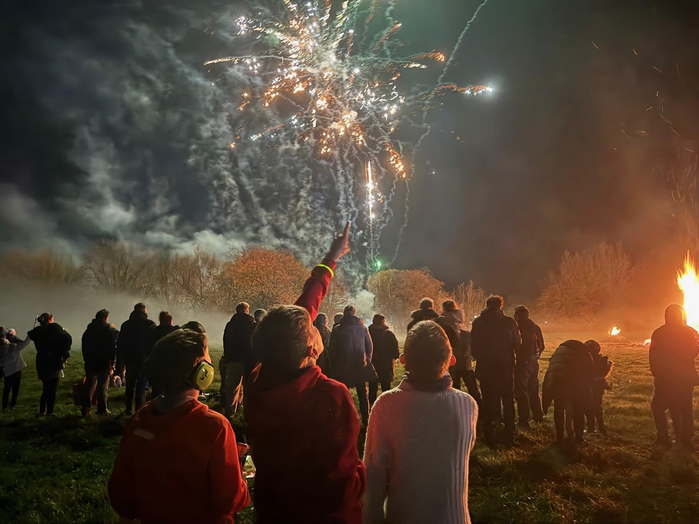
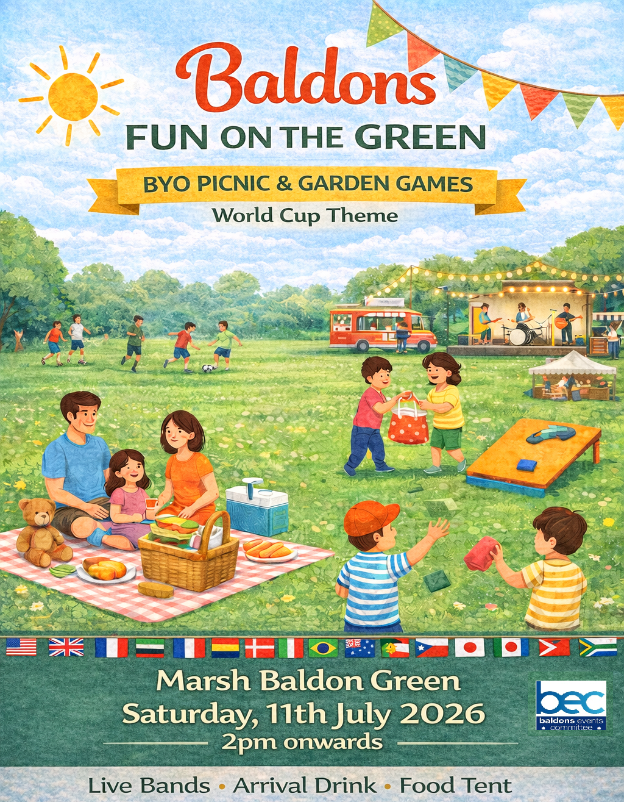

From spectacular fireworks on the village green to long summer lunches — BEC brings the Baldons together throughout the year.

Our flagship event — 800 to 1,000 villagers gather on the green each November for a bonfire, fairground rides, food and wine, and a spectacular fireworks display. The income from this event funds everything else BEC does.

BYO picnic, garden games and World Cup theme on the village green. Live bands, an arrival drink, food tent, fairground rides and games for all ages. A brilliant summer afternoon for the whole village.
Over the years BEC has also organised the Baldons Feast, the Ball, the Barn Dance, the Safari Supper, VE Day celebrations, and a Coronation Lunch on the Green. We also provide the Christmas tree on the village green each December and gifts for village children.
Have an idea for a new village event? We'd love to hear it — get in touch.
None of our events happen without willing volunteers. Setting up, taking down, running the bar, marshalling cars — every pair of hands makes a difference.